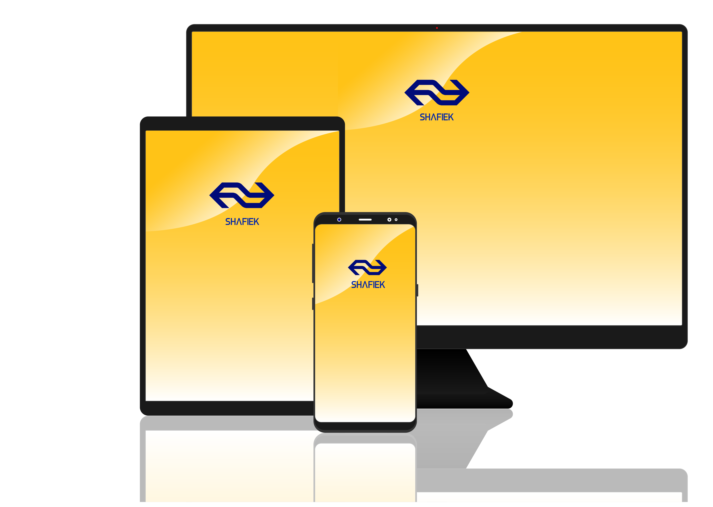

About my work
Period 1 was my first experience on the education communication multimedia design. Below are a some of assignments from the first period.
Project TARGETS
The assignment was to find the needs of international students. I completed this course with a 7.4
Project SoundcloudBOX


Establish an application where Soundcloud and ADE will work together. ADE would like something unique to happen while waiting in the rows of a particular event. It involves placing a jukebox that can be operated by an application. Furthermore, it is not.
I completed this course with a 8,0.
Visual interface design

he redevelopment of the OBA application. In addition, research had to be done of the house style. No changes could be made to the appearance of the application. But in interaction.
My application does not have many functions per screen, I have deliberately chosen because there is a focus point on every screen that the user has to look at.
I completed this course with a 8,8.
User Centred Design
UCD was about observing how we could improve students' experiences with regard to coffee machines. I chose the AMFi target group because they have a deadline to meet on a daily basis and they need coffee.
The change I want to make is to adjust the strength of the coffee to the wishes of the user so that they can determine how much coffee they need to meet the deadlines.
I completed this course with a 7,7
Project Team

Developing an application for a rugby athlete. In the process, I and my team found out that the statistics differ among the athletes and that we would like to rectify so that the coach can see how each elite athlete is doing on the field.
This application contains a login screen, because there are many teams in the Netherlands. In addition, the athletes can not only look at their own statistics, but also at each other to increase motivation.
I completed this course with a 8,0.
New product development
NPD was about finding a problem, and solving it with the product.
The problem was that students such as AMFI go to a certain cafe to get inspiration there. But the cafe must be up to date with the sources of inspiration.
My team and I have come up with the idea of developing a digital board where AMFI students can put their thoughts to the mark by signing on them. Dot gives relaxation and it releases all problems.
I completed this course with a 6,9.
Enjoy! Cause this is just the beginning, next year I'll come back with more of my work and I promise you, it is going to be...
The best part is, it is a inspiration agent for you! Ok enough talk, let's start!
Maatschappij en Interactie

Choosing a website that can be changed because of influencing and addiction. I chose the IDorganics.
IDorganics is a company that specializes in organic products. But sometimes these products are not attractive and I have made a change.
I have put an attractive photo with each product with a matching text.
Making a poster with all the Tristan Harris hijacks. Each hijack is illustrated in its own form. The illustrations have a deep thought to understand. Take your time and look at it carefully, you will understand it.
Illustration

This was a assignment for illustrating an person from a serie, The Arrow!
Making a poster with all the Tristan Harris hijacks. Each hijack is illustrated in its own form. The illustrations have a deep thought to understand. Take your time and look at it carefully, you will understand it.
Illustration

This was a assignment for illustrating an person from a serie, The Arrow!
Illustration
This was a assignment for illustrating an person from a serie, The Arrow!
Typografie "pesterij"

This was an assignment for making an unknown application but with lots of added value, I devised to send battery to each other by means of bluetooth, called Batthrow App!
Application

This was an assignment for making an unknown application but with lots of added value, I devised to send battery to each other by means of bluetooth, called Batthrow App!
Happy 2k18

A promotional poster before everyone went to 2018!
Project web
A promotional poster before everyone went to 2018!
Panter
A promotional poster before everyone went to 2018!
Sedes "no sleep"

A promotional poster before everyone went to 2018!
Fotografie


A promotional poster before everyone went to 2018!